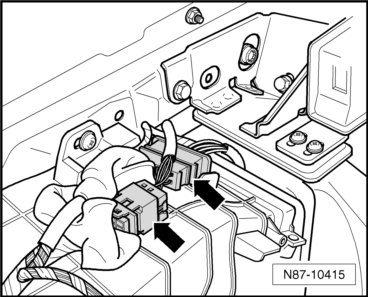
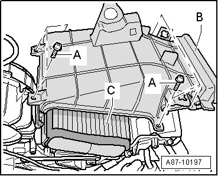
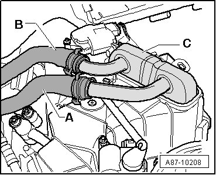
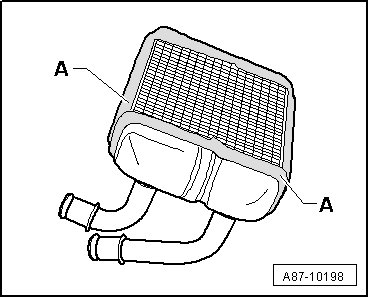

Heater Core Case: Service and Repair
Rear A/C Unit Heat Exchanger
Special Tools and Equipment
• Hose Clamps up to Diameter 25 mm (3094)
• Cooling System Tester (V.A.G 1274)
Removing
- Switch off ignition.
- Release the pressure in the coolant circuit by opening the cap on the coolant reservoir.
- Bring rear heating & A/C unit into service position. Refer to --> [ Second Rear Heating and A/C Unit, Service Position ] Second Rear Heating and A/C Unit, Service Position

- Disconnect the connectors from the A/C unit - arrows -.
- Remove Left Rear Air Door Motor (V239). Refer to --> [ Left Rear Air Door ] Service and Repair.
- Remove Right Rear Air Door Motor (V240). Refer to --> [ Right Rear Air Door ] Service and Repair.
- Remove the bolts - A - and the upper cover - B -.

- Mark both coolant hoses - A - and - B - to rear heater core - C - risk of interchange.

- Clamp off both coolant hoses - A - and - B - to the rear heat exchanger - C - using Hose Clamps Up To 25 Mm Diameter (3094).
- Remove the heat exchanger - C - from the A/C unit.
- Cover the area under the A/C unit with absorbent paper to prevent leaking coolant from running onto the A/C unit or carpet.
- Place a container under both connections to the heat exchanger - C - and disconnect both coolant hoses.
Installing
- Clean the rear A/C unit.
- Check the foam seals on the heat exchanger - A -.

• The foam seals must be attached without gaps and must not be damaged.
- Insert heater core - C - into heating & A/C unit.
- Connect coolant hose - B - to coolant pipe to heater core - C - coolant hose - A - is not connected for the time being.
• Connect the coolant hoses to the correct sides.
• The coolant hose - A - to the return to the engine over the hose group under the left fender.
• The coolant hose - B - on the supply from the engine over the hose group under the left fender.
- Add coolant to the reservoir up to the upper marking --> Engine Mechanical, Fuel Injection and Ignition 19 General Information.
- Cover the area under the A/C unit with absorbent paper to prevent leaking coolant from running onto the A/C unit or carpet.
- Place a container under connection - A - to heater core - C -.
- Open the Hose Clamps Up To 25 mm Diameter (3094) on coolant hose - B - enough so coolant can flow slowly into the heat exchanger to pre-bleed the heat exchanger.
• If the coolant does not flow into the heat exchanger on its own, use the hand pump from the Cooling System Tester (V.A.G 1274) to build up pressure in the reservoir and increase the flow.
- Wait until coolant exits from the coolant hose connection - A - on the coolant pipe to the heat exchanger.
- Connect coolant hose - A - at coolant pipe to heater core.
- Install the removed components again in reverse order.
- Bleed coolant circuit.